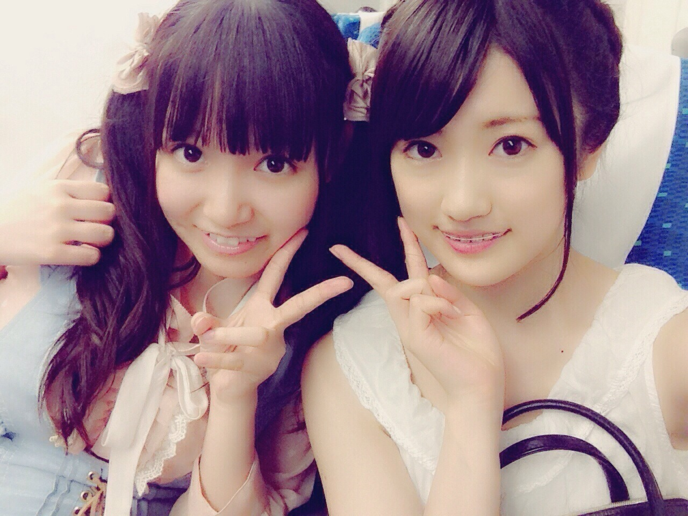
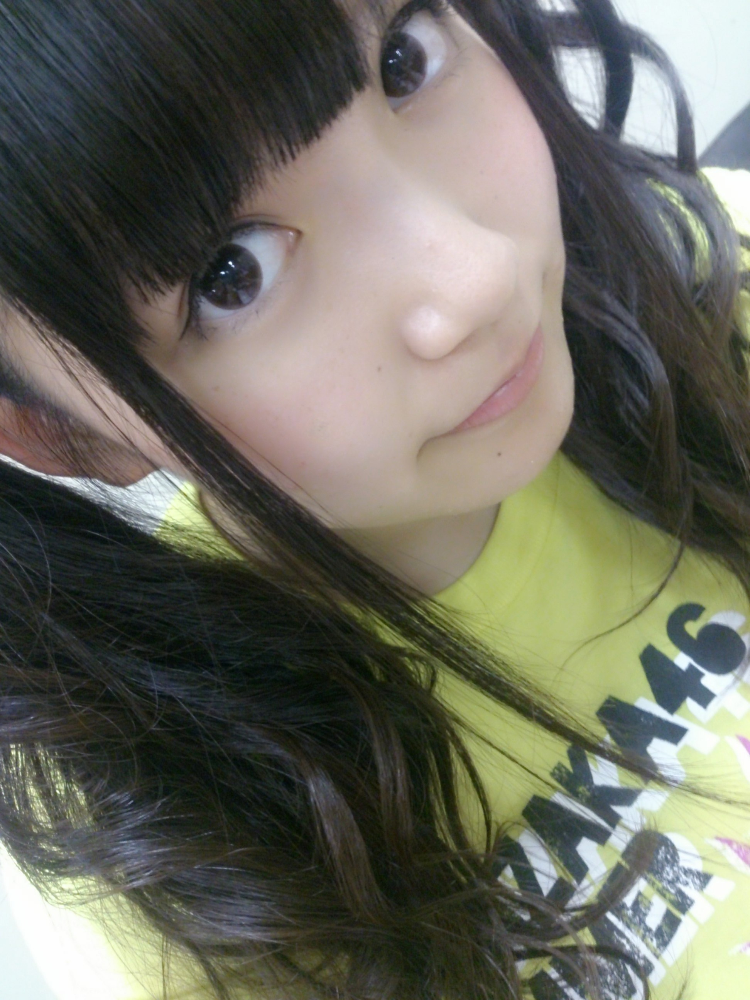
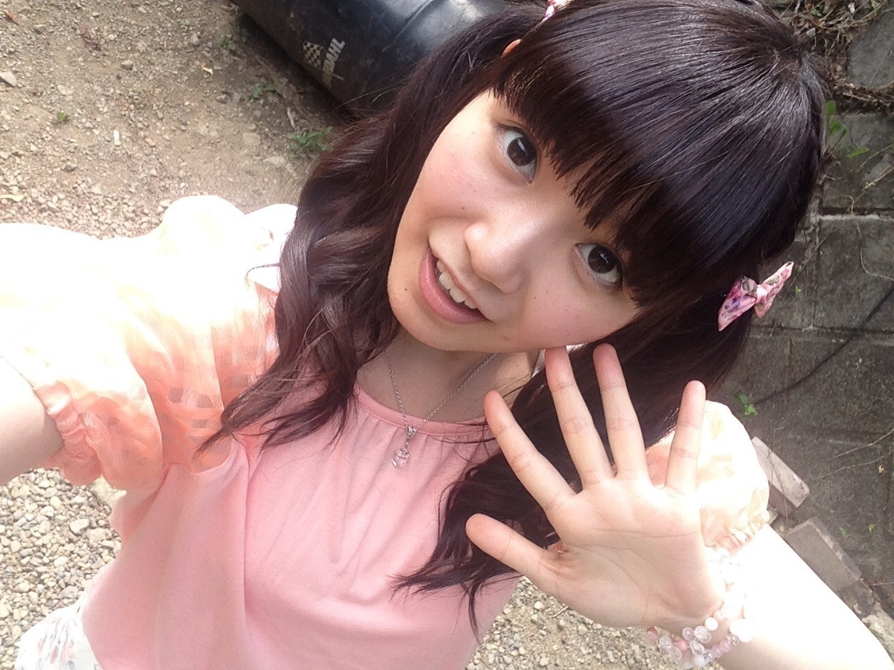
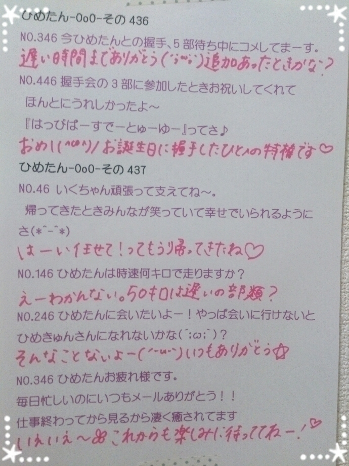
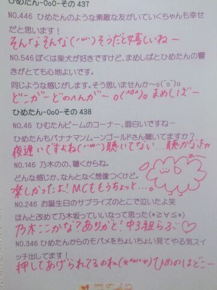

| 2014/08 27 Wed | ひめたん-OoO-その473 |

ひなちま♡は
ひなちまはいつも
「めーちゃんめーちゃん(＊`ω´＊)」って
いじってくるんだよー
のぎ天のお話はちょっと下に書くよー
名古屋 ふわふわツイン

はっ近めでした失礼しました(Tシャツは大阪)
名古屋公演終わりました！
遊びに来てくださったみなさん
ほんとにありがとうございました(＊´_`＊)♡
玲奈さん、せいらりんの地元愛知ですね
ガイシホール広かったー
名古屋には熱いひとがいっぱいいらっしゃった！
はじめましてのひとも
1年ぶりのひとも、全握ぶりのひとも
もちろんそれ以外のひとも
みんなと一緒になって盛り上がる会場って
なんかすてきだなって思った＊
乃木坂を知るきっかけはそれぞれだと思うけど
ひとりひとりがライブ会場に来てくれなかったら
私たちとの出会い、楽しいライブは実現しないよね
そう思うと もう感謝しかないやー(´；_；｀)
名古屋公演ではねー
昼は れなたんびーむ、まいやんびーむ
夜は れかたんびーむ見れたよ(<・ω・>)
「びーむしてうちわ」もいっぱいあった！
びーむの浸透率！！
嬉しいことですねー
でもねーひとつだけ忘れないで？
やっぱり本家が一番だよ♡♡
30日は全国ツアー千秋楽 明治神宮球場！
予報では雨らしいけど(´・ω・｀)
晴れたらいいなー
行くよってみなさん楽しみにしててくださいね
きゅんきゅん王国のみなさんは
ぴんく のサイリウム
ひめたん タオル
ひめたん うちわ
ひめたん Tシャツ
も準備してみたら一層盛り上がれるかも♡
のぎ天！


やっと観たよー
私たちF班賑やか(^O^)(^O^)
ひめたんかなりんのいちゃいちゃは
最近では定番化してきたよね♡
ひなちまのブログには
3年に1度の黒ひなちまって書いてあったけど
面白いからもっとやってもいいのにー(笑)
コメント読んでて多かったのが
「きゅんきゅん王国のひめは意外と豪快ですね」
「きゅんきゅん王国のひめは意外と乱暴ですね」
「きゅんきゅん王国のひめは意外と雑ですね」......
悪口ですか(´；_；｀)違うよね
でもほんとに細かい作業は苦手なんだよねー
みのは使えないけど
こんなおにゃのこ どうですかだめですか(´；；｀)
次回もみてねー♪
乃木のの次回は
伊藤万理華ちゃん
井上小百合ちゃん です☆
この3人の組み合わせ、見覚えないですかー？
次回は文化放送はお休みなので
山梨放送・ラジオ福島・青森放送を
お聴きのみなさんにお届けします♪

 明日からきゅんきゅん王国に
明日からきゅんきゅん王国に
住むことになりました！
おめでとう(^O^)
引っ越し祝いにお蕎麦でも
送っておきますね～
ゆかりんの曲では何が一番好き？
1曲には絞れないなあ
童話迷宮
恋のタイムマシン
Fortune of Love
とか好きです♡
サークルの自己紹介でひめたんびーむを
お借りしたんだけど、豪快にスベりました
どうしてくれるんですか⁉ ︎
「きゅんきゅんしたら わー♡って言ってね」
って予防線を張るんだよー
あと、すべったのがひめたんのせいみたいな言い方
やめてくれるかな(´-ω-`)
きゅんきゅん王国では、
目玉焼きに醤油をつけますか、
ソースをつけますか？
それともリボンをつけますか？
かわいい。みんなにはぜひりぼんをつけてほしい
でもひめはソースがいいなー
ひめたんが１番困る質問します
ひめたんはどうしてそんなにかわいいんですか？
ああー困った(´；_；｀)
ひめたんのちーちゃんの好きなところ
5個教えてください
みんなのお父さんなところ
よくめーちゃんのこといじめてくるところ
実はめーちゃんが大好きなところ
斎藤家みんなすき
歌がじょうずなことろ
私は実はサユリストなのですが、
王国にも住みたいと考えております。
どうか許可を下さいませ...！
さゆなら優しいから
きっといいよって言ってくれるはず......
いいや黙っておくね安心して( ˘ω˘ )なーんて♡
ひめたんの日記の
コメント欄下２ケタに46を踏んだ方へ
手書きでコメ返するコーナー
＼ ひめたん46 ／


いつもコメントたくさん
ありがとうございます
前回もたくさんコメント嬉しいわひゃー♡
のぎ天の感想、ツアーの感想、めーるの返信
ほかにも もちろん全部読んでるよ(^O^)
夏休みももう終わっちゃうんだねー
学生のみなさん課題は終わったのー？
ひめたんにとって今年は
高校生最後の夏休み。
ツアーに10th制作にと
乃木坂尽くしで充実してたなあ
みんなのおかげだよ！本当にありがとう(´；_；｀)
スケジュール帳見たら
ほんとに毎日乃木坂のメンバーの顔見てるの
もう家族みたい♡
(＊´・ω・＊)
コメント(753)
2014/08/27 23:24